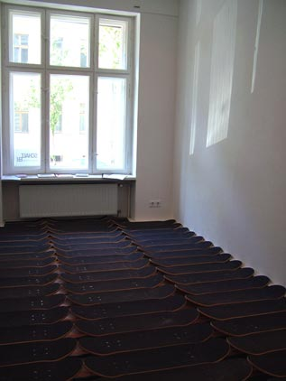
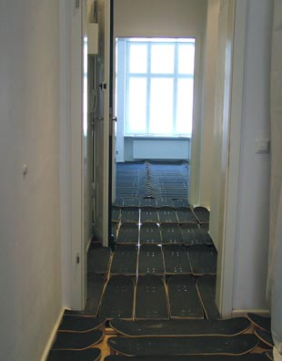
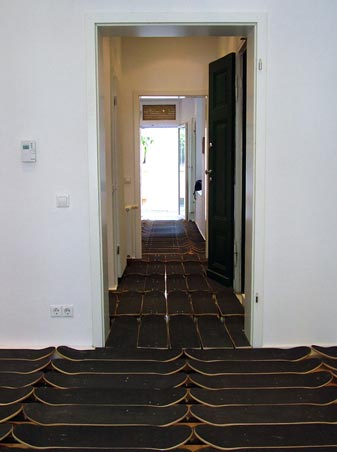
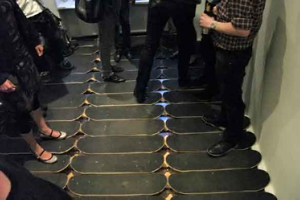
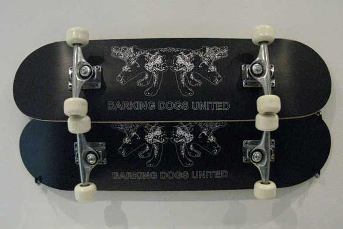

BARKING DOGS UNITED
----------------------------------------------------------------------------------------------------------------------------
NEWS ABOUT PROJECTS TEXT LINKS CONTACT
| Artist
Duo BARKING DOGS UNITED ---------------------------------------------------------------------------------------------------------------------------- NEWS ABOUT PROJECTS TEXT LINKS CONTACT |
| Please
select a project: 2008 What We Is Want What You Want SIZE MATTERZ 2007 Bis Auf Weiteres... 2006 On A Spaceship With No Fuel And No Future Carwash iForgive / iForget 2005 The Wild Bunch |
"Barking
Dogs United: What We Want Is What You Want" Solo Exhibition 15.05.08 - 28.06.08, Schalter, Berlin, Germany.  For what we want is what you want, Barking Dogs United have replaced the floor of Schalter with one made up entirely of skateboards. All the boards remain functional, complete with grip tape, trucks, and wheels, creating an unstable and ever-shifting ground to stand on. Quite literally, the boards give and roll slightly with viewers as they move through the space, inviting a physical sense of insecurity to enter the work. Barking Dogs United's work is often trained on questions about art's role and function in contemporary culture. Do we view the artist as a social activist dedicated to articulating society's ills, or an entertainer? What relationship does the artist have to the art market, galleries and audience? Who can or should we answer to, and to what end? Salmon and Arvanitis locate their work in the shuffle between order and chaos, self-promotion and humility, individual prerogative and global responsibility. And, as the exhibition title suggests, the work invites us to have it both ways, without offering an explicit answer or question.     All content copyright 2008 Nikos Arvanitis + Naomi Tereza Salmon - all rights reserved |